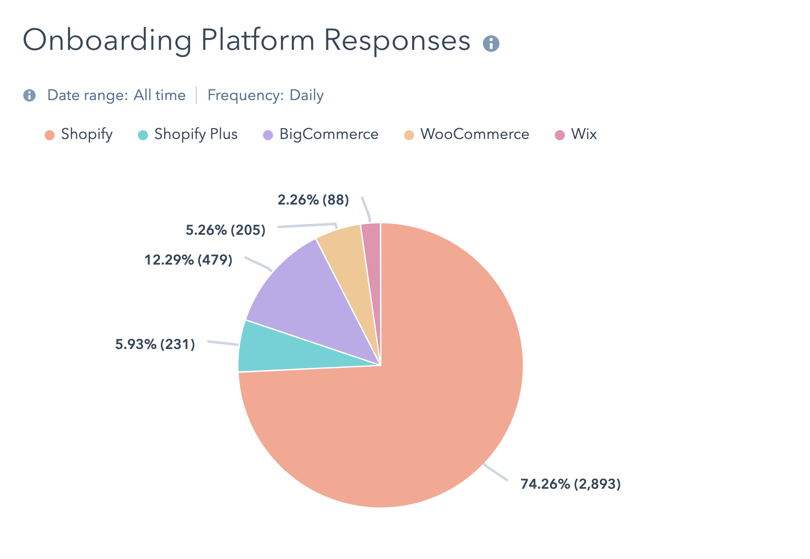

PriveHealth
Exploring behavioral elements that influence the design of cybersecurity trainingProblem
Successful cyberattacks are becoming increasingly frequent and threatening. The global cost of cybercrime was estimated to reach $2 trillion USD by 2019, a threefold increase from the 2015 estimate of $500 billion. In particular, the healthcare industry is extremely susceptible to security breaches because of the high value of patient data, low levels of detection, and ease of access.
The problem is that over 95% of these breaches are caused by human error.
Background
Currently, healthcare organizations create their own security awareness training in the form of booklet or presentation modules. This method has low levels of employee engagement, lack standardization across organizations, and is highly time consuming to security professionals to maintain updated content. We decided to build cybersecurity training content designed for healthcare professionals to increase training efficacy using evidence-based behavior-change methodologies.
A review of security awareness training was conducted including leading security awareness training platforms. Behavioral influencers that were common to all the training platforms was the use of fear, a persuasive technique, to encourage the adoption of better practices. Studies have shown that fear invocation have proved insufficient in behavioral change in the context of cybersecurity.
Interviewing security professionals: Over 8 months, we interviewed 80 security professionals including IT Directors, CISOs, CIOs, and privacy managers to better understand their pain points related to healthcare security and employee training. One of their primary concerns is the difficulties in managing cyber risk in an increasingly interconnected workplace. This interconnectivity leaves medical devices vulnerable to security breaches in the same way other networked computing systems are vulnerable, directly affecting clinical care and patient safety. Cybersecurity is now a topic that concerns all employees, not just the technical staff. In our primary research, we learned that end-user-focused security education is a top priority to these organizations.
Since the average age of the healthcare professionals was between 45 to 54 years, we assumed that the age group at the highest risk of a security breach would be the older generation of healthcare professionals. We quickly learned that was instead the millennials (ages 18 to 25) who posed the greatest threat to cybersecurity.
Interviewing front-line healthcare professionals:
We designed a questionnaire for front-line healthcare professionals so that we could gain a better understanding of their role, previous experiences with training programs, types of devices they interact with, motivations, and more.
Some of the objectives include,
- Identify the present-day cyber threats and challenges that the end-user faces in their day-to-day role
- Determine the level of cybersecurity knowledge held by users across various categories such as phishing, passwords, social engineering etc.
- Determine the level of awareness surrounding cybersecurity threats and impact held by users
- Determine what factors motivate an individual to participate in a training program
Exploring behavioral elements:
I explored behavioral elements that can positively influence the receptiveness of these end-users to cybersecurity education and behaviors. I also aimed to identify relevant behavioral elements that can be used to enhance the efficacy of cybersecurity awareness training. Several behaviors change models have been applied to engineer behavior change across various domains. In particular, I considered challenges from a cognitive sciences perspective since understanding how people perceive risk and ability to manage risk is crucial in the creation of effective cybersecurity awareness training.
By evaluating literature on a theoretical and practical level, I found commonalities in findings that exist between researchers. Specifically, we identified 3 commonalities of behavioral constructs found in literature that are absent in current awareness training: normative beliefs, self-efficacy, and threat-appraisal.
- 1) Normative beliefs: Normative beliefs are desirable behavioral expectations within group members. Several studies have shown that employees are quickly agreeable to normative beliefs shared among colleagues and that normative belief is the largest predictor of an employee’s intention to comply with security policy. Thus, clear communication of cybersecurity responsibilities and appropriate behaviors is important so that employees can seek out cybersecurity knowledge from their peers as well as promote communication between peers.
- 2) Self-efficacy: Since self-efficacy is one's belief in one's ability to succeed, training methods should be catered to the individual at an appropriate comprehension level that matches their current level of understanding. In this way, the individual will feel competent in his or her own ability to succeed and contribute to the security of the organization.
- 3) Threat appraisal: Threat appraisal is the user’s perceived severity of the threat and perceived vulnerability to the threat. Thus, it is necessary for IT professionals to convey the reality of security threats to organizational end-users. It is also important that IT professionals communicate to employees that information security is critical to an organization and that employee actions can make a difference in achieving the goal. Training can also instill a sense of information ownership to the user since studies have shown that psychological ownership influences security behavior. Consequently, the individual would strive to protect what one owns, with protective behaviors amplifying with a greater sense of ownership. Moreover, due to several intrapersonal functions influencing threat appraisal, training that is tailored to individual’s concerns and misperceptions is likely to be more effective than a one-size-fits-all approach.
Training content mock-ups: Using Bloom’s taxonomy and additional pedagogical research as guides to designing effective training material, we designed training mock-ups and quiz material. This material was shown to healthcare security professionals and end-users for feedback.


Learnings thus far: I had an awesome time working with my team and interacting with users to create a practical solution. While taking on this project, I learned that it's very easy to make assumptions. We're wired to take existing information and draw inferences. It takes discipline to question those assumptions and biases and consider others' perspectives and experiences. Actively thinking about and understanding how these biases influence and impact my work helped me mitigate biases in both user research and product design.